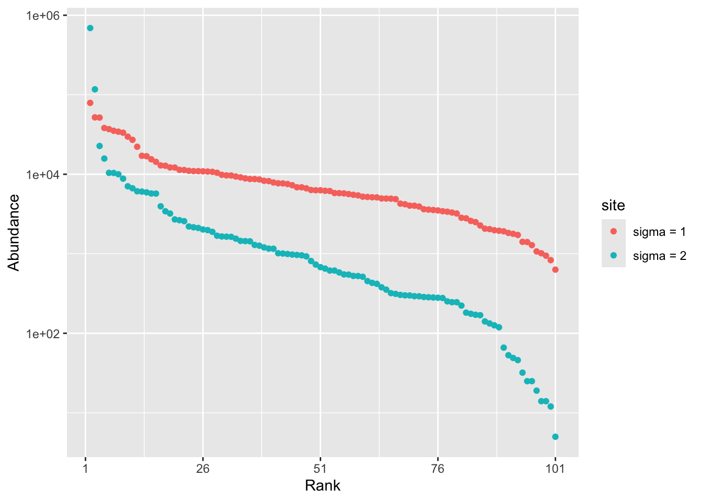
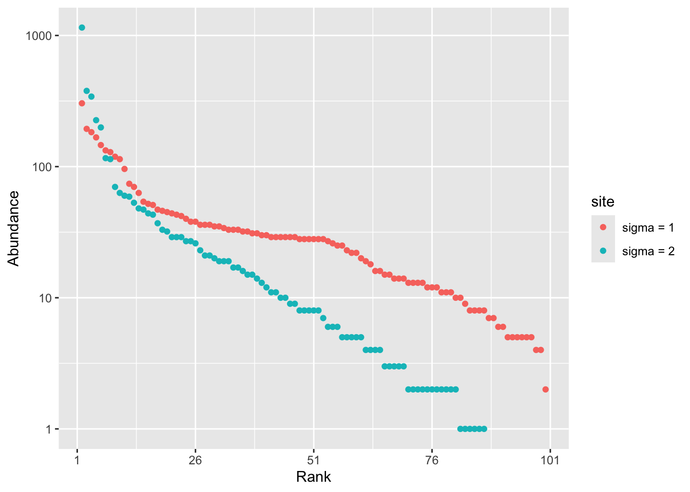
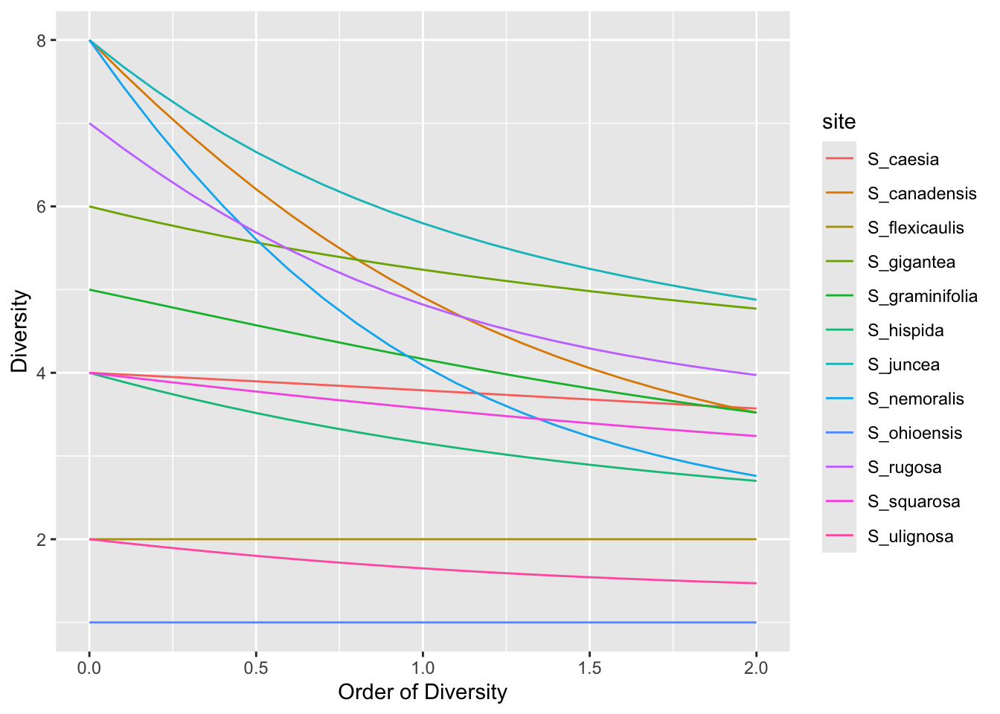
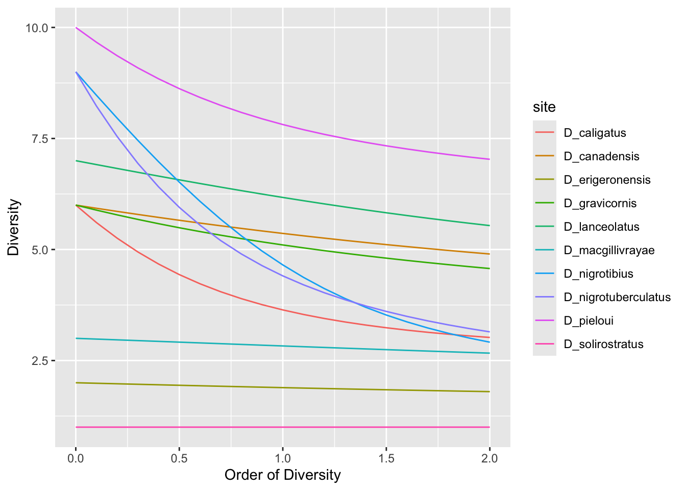
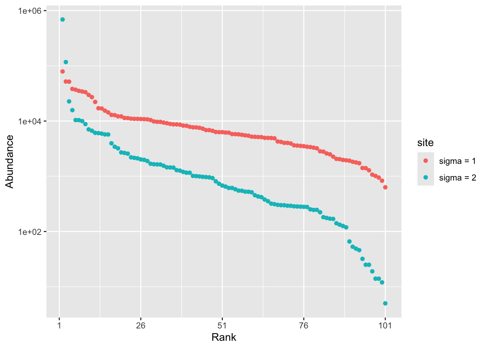
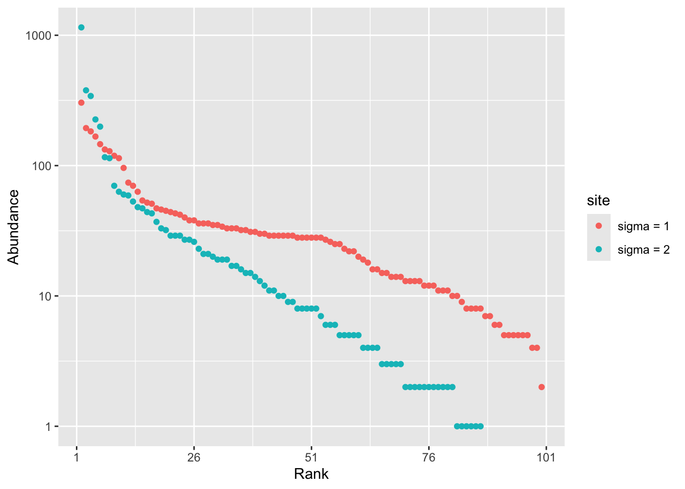
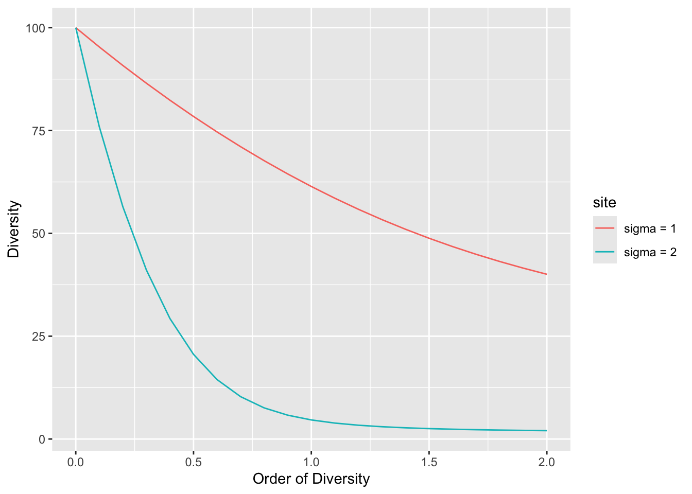

# A
(S_A <- 100 + 20)[1] 120(C_A <- 100 / S_A)[1] 0.8333333# B
(S_B <- 80 + 30)[1] 110(C_B <- 80 / S_B)[1] 0.7272727# C
(S_C <- 150 + 110)[1] 260(C_C <- 150 / S_C)[1] 0.5769231First choose your language and delete the section of the document in the other language.
Answer the questions precisely but briefly: the questions are detailed to guide you so there are many of them. Don’t waste your time repeating the course: you have all documents with you, copying their content is not valuable. To answer factual questions, you don’t need to make sentences: e.g., just write “4.” to answer the question “how much are 2 + 2?”.
Before you begin:
quarto publish gh-pages index.qmd
During your work: render the document regularly (at the end of each question, for example) so that problems do not pile up.
At the end of the exam: save the file, make a commit and push the project to GitHub. Do not modify the project after the exam has finished.
Commencez par choisir votre langue et supprimez la partie du document rédigée dans l’autre langue.
Répondez aux questions de manière précise mais concise : les questions sont détaillées pour vous guider, c’est pourquoi elles sont nombreuses. Ne perdez pas votre temps à répéter le cours : vous disposez de tous les documents, il est inutile d’en recopier le contenu. Pour répondre aux questions factuelles, vous n’avez pas besoin de rédiger des phrases : par exemple, écrivez simplement “4.” pour répondre à la question “Combien font 2 + 2 ?”.
Avant de commencer:
quarto publish gh-pages index.qmd
Pendant votre travail: rendez le document régulièrement (à la fin de chaque question par exemple) pour ne pas laisser les problèmes s’accumuler.
A la fin de l’examen: enregistrez le fichier, faites un commit et poussez le projet sur GitHub. Ne modifiez pas le projet après la fin de l’examen.
You have three inventories of 10-hectare areas of forest (approximately 5,000 trees):
Reminder of the estimator formulas, using the notation from the course:
Quickly estimate the asymptotic richness of the forest using the jackknife estimators and the rules of Brose et al. (2003).
Estimation using jackknife 1 and coverage:
# A
(S_A <- 100 + 20)[1] 120(C_A <- 100 / S_A)[1] 0.8333333# B
(S_B <- 80 + 30)[1] 110(C_B <- 80 / S_B)[1] 0.7272727# C
(S_C <- 150 + 110)[1] 260(C_C <- 150 / S_C)[1] 0.5769231The estimated number of species is 120 according to jackknife 1 for forest A.
The coverage rate is too low for B and C: an estimate is attempted using jackknife 2:
# B
(S_B <- 80 + 2 * 30 - 20)[1] 120(C_B <- 80 / S_B)[1] 0.6666667# C
(S_C <- 150 + 2 * 110 - 30)[1] 340(C_C <- 150 / S_C)[1] 0.4411765The estimate for forest B is 120 species according to Jackknife 2.
The coverage rate for Forest C is still too low. Estimate using the Jackknife 3 method:
# C
(S_C = 150 + 3 * 110 - 3 * 30 + 10)[1] 400(C_C <- 150 / S_C)[1] 0.375The coverage rate is still below the threshold recommended by Brose et al. (38 per cent), but the entire inventory is taken into account: no species has been observed more than three times (110 + 30 + 10 = 150). The inventory is clearly insufficient to estimate species richness adequately.
The following function creates a phylogenetic tree with 3 species. The parameter h sets the height at which species A and B diverge.
tree_3sp <- function(h) {
NewickABC <- paste0("(C:1,(A:", 1 - h, ",B:", 1 - h, "):", h, ");")
phyloABC <- ape::read.tree(text = NewickABC)
plot(phyloABC, direction = "downwards", srt = 90)
axis(2)
}
# Create a tree
tree_3sp(0.5)
What is the order-0 phylogenetic diversity (Faith’s PD) of a community containing the three species, whose phylogenetic tree is shown in the figure?
PD is the sum of branch lengths, i.e. 1 + 0.5 + 0.5 + 0.5 = 2.5 effective species.
What is the possible range of values for
h?
0 to 1.
What effect does
hhave on the value of PD?
PD increases with \(h\) because the double branch between A, B and their common ancestor replaces the single branch between the ancestor and the root of the tree.
Express the value of PD in terms of
h.
\(PD = 1 + 2 * h + (1 - h) = 2 + h\).
What is the richness (taxonomic, not phylogenetic) of the community? Explain how \(h\) allows us to take into account the closeness between species B and A.
The community contains 3 species. This is also the value of PD for \(h = 1\), which assumes that species A and B are completely distinct. Conversely, for \(h = 0\), species B and A are considered identical: PD = 2.
If botanists disagree on whether species B and A are synonymous and a phylogeny shows that their distance \(h\) is small, suggest a method to help them reach agreement.
The value of \(h\) describes the distance between species B and A: PD takes this into account since its value is \(2 + h\). PD therefore allows us to describe species richness without having to decide between 2 and 3 species, the extreme cases of \(h = 0\) or \(h = 1\).
We draw two random distributions from a lognormal distribution. Their size and species richness are identical; only the standard deviation of the distribution varies.
library('tidyverse')── Attaching core tidyverse packages ──────────────────────── tidyverse 2.0.0 ──
✔ dplyr 1.2.1 ✔ readr 2.2.0
✔ forcats 1.0.1 ✔ stringr 1.6.0
✔ ggplot2 4.0.3 ✔ tibble 3.3.1
✔ lubridate 1.9.5 ✔ tidyr 1.3.2
✔ purrr 1.2.2
── Conflicts ────────────────────────────────────────── tidyverse_conflicts() ──
✖ dplyr::filter() masks stats::filter()
✖ dplyr::lag() masks stats::lag()
ℹ Use the conflicted package (<http://conflicted.r-lib.org/>) to force all conflicts to become errorslibrary('divent')Loading required package: Rcpp# Set the random seed for reproducibility
set.seed(973)
# Size and richness
the_size <- 1E6
the_richness <- 100
# Draw the first community
rcommunity( 1,
size = the_size,
species_number = the_richness,
distribution = "lnorm",
sd_lnorm = 1
) %>%
# Give it a name
mutate(site = "sigma = 1") %>%
# Bind the second community data into the same tibble
bind_rows(
# Draw the second community
rcommunity(
1,
size = the_size,
species_number = the_richness,
distribution = "lnorm",
sd_lnorm = 2
) %>%
# Give it a name
mutate(site = "sigma = 2")
) ->
# Store the result
comm_lnorm
# Whittaker plot
autoplot(comm_lnorm)
What is the species richness of the observed communities? What is the abundance of the rarest species (approximately, as read from the plot) compared to the total number of trees?
The 100 species in question are observed in a very large sample of one million trees. The rarest species, in the second community, is represented by fewer than 10 individuals.
What do we observe for a sample of reasonable size, say 6.25 ha with 600 trees per hectare? Draw the figure. Be careful not to overwrite the
comm_lnormvariable when reusing the code.
set.seed(973)
the_size <- 6.25 * 600
rcommunity(
1,
size = the_size,
species_number = the_richness,
distribution = "lnorm",
sd_lnorm = 1
) %>% mutate(site = "sigma = 1") %>%
bind_rows(
rcommunity(
1,
size = the_size,
species_number = the_richness,
distribution = "lnorm",
sd_lnorm = 2
) %>%
mutate(site = "sigma = 2")
) %>% autoplot()
Not all species in the second community are observed.
Plot the diversity profile of the two communities
profile_hill(comm_lnorm) %>%
autoplot()
Which community is the most diverse? Explain this in relation to the value of \(\sigma\).
The first one, because its probabilities exhibit lower variability: the probabilities are closer to equitability. In the second community, abundances decline very rapidly, resulting in more rare species.
The aim of this final section is to revisit and modernise the results of Pielou (1972). The data consist of abundance records for aphids of the genus Dactynotus on plants of the genus Solidago (Asteraceae), considered as their potential habitats. The diversity of each Solidago species is defined as the diversity of the aphid species it hosts.
 |
 |
We will first assess the diversity of aphids in their various habitats.
The data are contained in the file Pielou1972.csv.
# Read the file
read_csv('data/Pielou1972.csv') %>%
# Replace missing values with zeros
mutate(across(everything(), ~ replace_na(.x, 0))) %>%
# Create an abundances object
as_abundances() %>%
# Set equal weights
mutate(weight = 1) ->
pielou_1972Rows: 12 Columns: 11
── Column specification ────────────────────────────────────────────────────────
Delimiter: ","
chr (1): site
dbl (10): D_nigrotuberculatus, D_nigrotibius, D_caligatus, D_pieloui, D_cana...
ℹ Use `spec()` to retrieve the full column specification for this data.
ℹ Specify the column types or set `show_col_types = FALSE` to quiet this message.# Display it
pielou_1972# A tibble: 12 × 12
site weight D_nigrotuberculatus D_nigrotibius D_caligatus D_pieloui
<chr> <dbl> <dbl> <dbl> <dbl> <dbl>
1 S_canadensis 1 55 9 24 8
2 S_nemoralis 1 11 39 6 1
3 S_rugosa 1 19 4 22 11
4 S_juncea 1 13 5 1 9
5 S_gigantea 1 5 3 4 8
6 S_hispida 1 1 3 0 9
7 S_squarosa 1 2 0 0 4
8 S_graminifolia 1 1 0 1 4
9 S_caesia 1 1 2 0 1
10 S_ulignosa 1 0 4 0 1
11 S_flexicaulis 1 0 1 0 0
12 S_ohioensis 1 0 0 0 0
# ℹ 6 more variables: D_canadensis <dbl>, D_gravicornis <dbl>,
# D_lanceolatus <dbl>, D_macgillivrayae <dbl>, D_erigeronensis <dbl>,
# D_solirostratus <dbl>How many species of aphids are there?
ncol(pielou_1972) - 2[1] 10How many different plants are there?
nrow(pielou_1972)[1] 12Given the experimental protocol (all species studied are in the data; there are no unobserved species), diversity will always be calculated at the sample level: the argument estimator = "naive" will be used systematically.
Count the number of aphid species on each plant.
div_richness(pielou_1972, estimator = "naive")# A tibble: 12 × 5
site weight estimator order diversity
<chr> <dbl> <chr> <dbl> <dbl>
1 S_canadensis 1 naive 0 8
2 S_nemoralis 1 naive 0 8
3 S_rugosa 1 naive 0 7
4 S_juncea 1 naive 0 8
5 S_gigantea 1 naive 0 6
6 S_hispida 1 naive 0 4
7 S_squarosa 1 naive 0 4
8 S_graminifolia 1 naive 0 5
9 S_caesia 1 naive 0 4
10 S_ulignosa 1 naive 0 2
11 S_flexicaulis 1 naive 0 2
12 S_ohioensis 1 Single Species 0 1What is the maximum species richness?
8 aphid species out of a possible 10.
Calculate Simpson’s diversity (not entropy).
div_hill(pielou_1972, q = 2, estimator = "naive")# A tibble: 12 × 5
site weight estimator order diversity
<chr> <dbl> <chr> <dbl> <dbl>
1 S_canadensis 1 naive 2 3.52
2 S_nemoralis 1 naive 2 2.76
3 S_rugosa 1 naive 2 3.97
4 S_juncea 1 naive 2 4.88
5 S_gigantea 1 naive 2 4.77
6 S_hispida 1 naive 2 2.70
7 S_squarosa 1 naive 2 3.24
8 S_graminifolia 1 naive 2 3.52
9 S_caesia 1 naive 2 3.57
10 S_ulignosa 1 naive 2 1.47
11 S_flexicaulis 1 naive 2 2
12 S_ohioensis 1 Single Species 2 1 Which plant is the most diverse according to Simpson’s measure?
Solidago juncea.
Plot the diversity profiles of all Solidago species.
profile_hill(pielou_1972, estimator = "naive") %>% autoplot()
Which plant appears to be the most diverse, regardless of the order of diversity?
S. juncea.
Check whether the curves intersect for \(q>2\).
S. gigantea is less rich but more even: its diversity profile declines less rapidly. We can compare diversity of order 5, for example:
div_hill(pielou_1972, q = 5, estimator = "naive")# A tibble: 12 × 5
site weight estimator order diversity
<chr> <dbl> <chr> <dbl> <dbl>
1 S_canadensis 1 naive 5 2.56
2 S_nemoralis 1 naive 5 2.04
3 S_rugosa 1 naive 5 3.36
4 S_juncea 1 naive 5 3.91
5 S_gigantea 1 naive 5 4.00
6 S_hispida 1 naive 5 2.20
7 S_squarosa 1 naive 5 2.71
8 S_graminifolia 1 naive 5 2.73
9 S_caesia 1 naive 5 3.07
10 S_ulignosa 1 naive 5 1.32
11 S_flexicaulis 1 naive 5 2
12 S_ohioensis 1 Single Species 5 1 The diversity of order 5 of S. gigantea exceeds that of S. juncea: neither habitat is more diverse than the other, regardless of the perspective.
Two profiles are flat. Explain why.
S_flexicaulis occurs in two habitats with the same abundance. S_ohioensis is present in a single habitat. Both are perfectly evenly distributed.
Partition the diversity. Summarise this partitioning in one or a few sentences.
div_part(pielou_1972, estimator = "naive")# A tibble: 15 × 6
site scale estimator order diversity weight
<chr> <chr> <chr> <dbl> <dbl> <dbl>
1 Metacommunity gamma "naive" 1 6.35 12
2 Metacommunity beta "" 1 1.92 NA
3 Metacommunity alpha "" 1 3.31 NA
4 S_canadensis community "naive" 1 4.91 1
5 S_nemoralis community "naive" 1 4.09 1
6 S_rugosa community "naive" 1 4.82 1
7 S_juncea community "naive" 1 5.80 1
8 S_gigantea community "naive" 1 5.24 1
9 S_hispida community "naive" 1 3.16 1
10 S_squarosa community "naive" 1 3.57 1
11 S_graminifolia community "naive" 1 4.17 1
12 S_caesia community "naive" 1 3.79 1
13 S_ulignosa community "naive" 1 1.65 1
14 S_flexicaulis community "naive" 1 2 1
15 S_ohioensis community "Single Species" 1 1 1The Soledago metacommunity comprises 6.35 effective aphid species (diversity \(\gamma\)), which can be broken down into 3.3 species per habitat (diversity \(\alpha\)) multiplied by 1.91 effective habitats (diversity \(\beta\)), i.e. with no species in common.
With the asymptotic estimators (bug in divent published version), the values are:
div_part(pielou_1972)! Sample coverage is 0, most estimators will return `NaN`.
! Sample coverage is 0, most estimators will return `NaN`.# A tibble: 15 × 6
site scale estimator order diversity weight
<chr> <chr> <chr> <dbl> <dbl> <dbl>
1 Metacommunity gamma "UnveilJ" 1 6.44 12
2 Metacommunity beta "" 1 1.72 NA
3 Metacommunity alpha "" 1 3.75 NA
4 S_canadensis community "UnveilJ" 1 4.91 1
5 S_nemoralis community "UnveilJ" 1 4.44 1
6 S_rugosa community "UnveilJ" 1 4.82 1
7 S_juncea community "UnveilJ" 1 7.37 1
8 S_gigantea community "UnveilJ" 1 5.80 1
9 S_hispida community "UnveilJ" 1 3.16 1
10 S_squarosa community "UnveilJ" 1 4.07 1
11 S_graminifolia community "UnveilJ" 1 6.12 1
12 S_caesia community "UnveilJ" 1 6.59 1
13 S_ulignosa community "UnveilJ" 1 1.65 1
14 S_flexicaulis community "UnveilJ" 1 2 1
15 S_ohioensis community "Single Species" 1 1 1Moving forward, we will follow Pielou’s approach by studying the diversity of habitats occupied by each aphid species. From this point onwards, you can no longer simply apply the course content; instead, you must extend the concepts you are familiar with to a new approach.
Given that each Solidago constitutes a distinct habitat for an aphid species, the number of habitats occupied serves as a proxy for the size of its niche. A generalist aphid will occupy more habitats (in other words, have a broader niche) than a specialist aphid. The niche breadth of each aphid species is therefore initially defined by the number of different habitats it occupies.
The data must be organised differently, with aphid species in rows and habitats in columns, which requires converting it to a data matrix and transposing it. As the code is rather laborious, it is provided below.
# Read the file
read_csv('data/Pielou1972.csv') %>%
# Replace missing values with zeros
mutate(across(everything(), ~ replace_na(.x, 0))) ->
pielou_rawRows: 12 Columns: 11
── Column specification ────────────────────────────────────────────────────────
Delimiter: ","
chr (1): site
dbl (10): D_nigrotuberculatus, D_nigrotibius, D_caligatus, D_pieloui, D_cana...
ℹ Use `spec()` to retrieve the full column specification for this data.
ℹ Specify the column types or set `show_col_types = FALSE` to quiet this message.# Save the names of the Soledagos
pielou_raw %>%
pull(site) ->
pielou_habitats
# Create a matrix
pielou_raw %>%
# Remove the 'site' column
select(-site) %>%
# Convert to a matrix
as.matrix() %>%
# Transpose the matrix
t() ->
pielou_niches.matrix
# Add the column names
colnames(pielou_niches.matrix) <- pielou_habitats
pielou_niches.matrix %>%
# Create an abundances object
as_abundances() %>%
# Set equal weights
mutate(weight = 1) ->
pielou_niches
# Display it
pielou_niches# A tibble: 10 × 14
site weight S_canadensis S_nemoralis S_rugosa S_juncea S_gigantea S_hispida
<chr> <dbl> <dbl> <dbl> <dbl> <dbl> <dbl> <dbl>
1 D_nig… 1 55 11 19 13 5 1
2 D_nig… 1 9 39 4 5 3 3
3 D_cal… 1 24 6 22 1 4 0
4 D_pie… 1 8 1 11 9 8 9
5 D_can… 1 8 5 2 5 0 4
6 D_gra… 1 8 4 2 5 4 0
7 D_lan… 1 3 2 3 1 1 0
8 D_mac… 1 0 1 0 1 0 0
9 D_eri… 1 2 0 0 0 0 0
10 D_sol… 1 0 0 0 0 0 0
# ℹ 6 more variables: S_squarosa <dbl>, S_graminifolia <dbl>, S_caesia <dbl>,
# S_ulignosa <dbl>, S_flexicaulis <dbl>, S_ohioensis <dbl>The number of habitats occupied by each aphid species can be counted using the usual diversity calculation functions, applied to this unusual dataset:
div_richness(pielou_niches, estimator = "naive")# A tibble: 10 × 5
site weight estimator order diversity
<chr> <dbl> <chr> <dbl> <dbl>
1 D_nigrotuberculatus 1 naive 0 9
2 D_nigrotibius 1 naive 0 9
3 D_caligatus 1 naive 0 6
4 D_pieloui 1 naive 0 10
5 D_canadensis 1 naive 0 6
6 D_gravicornis 1 naive 0 6
7 D_lanceolatus 1 naive 0 7
8 D_macgillivrayae 1 naive 0 3
9 D_erigeronensis 1 naive 0 2
10 D_solirostratus 1 Single Species 0 1Which aphid species is the most generalist? What proportion of habitats does it occupy?
D. pieloui occupies 10 out of the 12 possible habitats.
Which species is the most specialist?
D_solirostratus occupies only a single habitat.
The diversity of occupied habitats can take abundance into account.
Plot the aphid diversity profiles and establish the link between the actual number of Soledago plants and niche width.
profile_hill(pielou_niches, estimator = "naive") %>%
autoplot()
The effective number of habitats (= Soledago) occupied by a species of aphid is the number of equiprobable habitats with the same entropy as the data. This effective number of habitats generalises the niche width defined previously, by determining the weight given to rare habitats (i.e. those that are rarely occupied).
Pielou focuses solely on Shannon entropy in her article, using an archaic form known as the Brillouin formula, which makes the article very difficult to read. Levins (1968) was the first to propose measuring niche width in this way, suggesting two metrics: \(-\sum_i{p_i \log(p_i)}\) and \(\sum_i{\frac{1}{p_i^2}}\), where \(p_i\) is the probability that an aphid is found in habitat \(i\). Identify these two metrics.
Shannon’s entropy and Simpson’s diversity. Simpson’s diversity is shown in the diversity profile above.
Pielou wants to assess niche overlap in addition to niche width. The reasoning is clearer using Hill’s numbers. If the niches do not overlap at all, there is only one species per habitat, provided, of course, that there are fewer species than habitats. Conversely, if all species are completely generalist, the number of species per habitat equals the total number of species.
What measure reflects niche overlap? Give its value for \(q = 1\).
It is \(\alpha\) diversity: the average number of species per habitat. This was calculated earlier: it is 3.3. Just over three species occupy the same habitat, whilst the possible values range from 1 to 10.
Vous disposez de trois inventaires de 10 hectares de forêt (environ 5000 arbres) :
Rappel des formules des estimateurs, avec les notations du cours :
Estimez rapidement la richesse asymptotique de la forêt en utilisant les estimateurs jackknife et les règles de Brose et al. (2003).
Estimation avec le jackknife 1 et couverture :
# A
(S_A <- 100 + 20)[1] 120(C_A <- 100 / S_A)[1] 0.8333333# B
(S_B <- 80 + 30)[1] 110(C_B <- 80 / S_B)[1] 0.7272727# C
(S_C <- 150 + 110)[1] 260(C_C <- 150 / S_C)[1] 0.5769231Le nombre d’espèce estimé est 120 selon le jackknife 1 pour la forêt A.
Le taux de couverture est trop faible pour B et C : l’estimation est tenté avec le jackknife 2 :
# B
(S_B <- 80 + 2 * 30 - 20)[1] 120(C_B <- 80 / S_B)[1] 0.6666667# C
(S_C <- 150 + 2 * 110 - 30)[1] 340(C_C <- 150 / S_C)[1] 0.4411765L’estimation de la forêt B est 120 espèces selon le jackknife 2.
Le taux de couverture de la forêt C est encore trop faible. Estimation avec le Jackknife 3:
# C
(S_C = 150 + 3 * 110 - 3 * 30 + 10)[1] 400(C_C <- 150 / S_C)[1] 0.375Le taux de couverture est encore inférieur à la limite conseillée par Brose et al. (38%) mais tout l’inventaire est pris en compte : il n’y a pas d’espèces observées plus de 3 fois (110 + 30 + 10 = 150). L’inventaire est clairement insuffisant pour estimer la richesse convenablement.
La fonction suivante permet de créer un arbre phylogénétique avec 3 espèces. Le paramètre h fixe la hauteur à laquelle les espèces A et B se séparent.
tree_3sp <- function(h) {
NewickABC <- paste0("(C:1,(A:", 1 - h, ",B:", 1 - h, "):", h, ");")
phyloABC <- ape::read.tree(text = NewickABC)
plot(phyloABC, direction = "downwards", srt = 90)
axis(2)
}
# Make a tree
tree_3sp(0.5)
Quelle est la diversité phylogénétique d’ordre 0 (PD de Faith) d’une communauté contenant les trois espèces, dont l’arbre phylogénétique est celui de la figure ?
PD est la longueur totale de toutes les branches, c’est-à-dire 1 + 0,5 + 0,5 + 0,5 = 2,5 espèces effectives.
Quelle est l’étendue possible des valeurs de
h?
0 à 1.
Quel est l’effet de
hsur la valeur de PD ?
PD augmente avec \(h\) parce que la double branche entre A, B et leur ancêtre commune remplace branche simple entre l’ancêtre et la racine de l’arbre.
Ecrivez la valeur de PD en fonction de `h`.
\(PD = 1 + 2 * h + (1 - h) = 2 + h\).
Quel est la richesse (taxonomique, pas phylogénétique) de la communauté ? Expliquez comment \(h\) permet de prendre en compte la proximité entre les espèces B et A.
La communauté contient 3 espèces. C’est aussi la valeur de PD pour \(h = 1\), qui considère que les espèces A et B sont complètement distinctes. Pour \(h = 0\) à l’inverse, on considère que les espèces B et A sont identiques : PD = 2.
Si les botanistes sont en désaccord sur la synonymie ou non des espèces B et A et qu’une phylogénie montre que leur distance \(h\) est faible, proposez une méthode pour les mettre d’accord.
La valeur de \(h\) décrit la distance entre les espèces B et A : PD la prend en compte puisque sa valeur est \(2 + h\). PD permet donc de décrire la richesse sans trancher entre 2 et 3 espèces, cas extrêmes de \(h = 0\) ou \(h = 1\).
On tire deux distributions aléatoires dans une loi lognormale. Leur taille et leur richesse sont identiques, seul l’écart-type de la distribution varie.
library("tidyverse")
library("divent")
# Set the random seed for reproducibility
set.seed(973)
# Size and richness
the_size <- 1E6
the_richness <- 100
# Draw the first community
rcommunity(
1,
size = the_size,
species_number = the_richness,
distribution = "lnorm",
sd_lnorm = 1
) %>%
# Give it a name
mutate(site = "sigma = 1") %>%
# Bind the second community data in the same tibble
bind_rows(
# Draw the second community
rcommunity(
1,
size = the_size,
species_number = the_richness,
distribution = "lnorm",
sd_lnorm = 2
) %>%
# Give it a name
mutate(site = "sigma = 2")
) ->
# Store the result
comm_lnorm
# Whittaker plot
autoplot(comm_lnorm)
Quelle est la richesse des communautés observées ? Quel est l’abondance de l’espèce la plus rare (approximativement, lue sur le graphique) comparativement au nombre d’arbres total ?
Les 100 espèces demandées sont observées dans un échantillon très grand d’un million d’arbres. L’espèce la plus rare, dans la deuxième communauté, est représentée par moins de 10 individus.
Qu’observe-t-on pour un échantillon de taille raisonnable, disons 6,25ha avec 600 arbres / ha ? Faites la figure. Attention à ne pas détruire la variable
comm_lnormen réutilisant le code.
set.seed(973)
the_size <- 6.25 * 600
rcommunity(
1,
size = the_size,
species_number = the_richness,
distribution = "lnorm",
sd_lnorm = 1
) %>%
mutate(site = "sigma = 1") %>%
bind_rows(
rcommunity(
1,
size = the_size,
species_number = the_richness,
distribution = "lnorm",
sd_lnorm = 2
) %>%
mutate(site = "sigma = 2")
) %>%
autoplot()
On n’observe pas toutes les espèces de la deuxième communauté.
Tracez le profil de diversité des deux communautés
profile_hill(comm_lnorm) %>%
autoplot()
Quelle est la communauté la plus diverse ? Faites le lien avec la valeur de \(\sigma\).
La première parce que ses probabilités ont une variabilité plus faible : les probabilités sont plus proches de l’équitabilité. Dans la deuxième communauté, les abondances décroissent très rapidement, donnant lieu à plus d’espèces rares.
L’objectif de cette dernière partie est de redécouvrir et de moderniser les résultats de Pielou (1972). Les données sont des relevés d’abondances de pucerons du genre Dactynotus sur des plantes du genre Solidago (Asteraceae), considérées comme leurs habitats possibles. La diversité de chacun des Solidago est celle des espèces de pucerons qu’il abrite.
|
|
Nous allons d’abord évaluer la diversité des pucerons dans leurs différents habitats.
Les données sont dans le fichier Pielou1972.csv.
# Read the file
read_csv("data/Pielou1972.csv") %>%
# Replace missing values by zeros
mutate(across(everything(), ~ replace_na(.x, 0))) %>%
# Make an abundances object
as_abundances() %>%
# Set equal weights
mutate(weight = 1) ->
pielou_1972Rows: 12 Columns: 11
── Column specification ────────────────────────────────────────────────────────
Delimiter: ","
chr (1): site
dbl (10): D_nigrotuberculatus, D_nigrotibius, D_caligatus, D_pieloui, D_cana...
ℹ Use `spec()` to retrieve the full column specification for this data.
ℹ Specify the column types or set `show_col_types = FALSE` to quiet this message.# Show it
pielou_1972# A tibble: 12 × 12
site weight D_nigrotuberculatus D_nigrotibius D_caligatus D_pieloui
<chr> <dbl> <dbl> <dbl> <dbl> <dbl>
1 S_canadensis 1 55 9 24 8
2 S_nemoralis 1 11 39 6 1
3 S_rugosa 1 19 4 22 11
4 S_juncea 1 13 5 1 9
5 S_gigantea 1 5 3 4 8
6 S_hispida 1 1 3 0 9
7 S_squarosa 1 2 0 0 4
8 S_graminifolia 1 1 0 1 4
9 S_caesia 1 1 2 0 1
10 S_ulignosa 1 0 4 0 1
11 S_flexicaulis 1 0 1 0 0
12 S_ohioensis 1 0 0 0 0
# ℹ 6 more variables: D_canadensis <dbl>, D_gravicornis <dbl>,
# D_lanceolatus <dbl>, D_macgillivrayae <dbl>, D_erigeronensis <dbl>,
# D_solirostratus <dbl>Combien y a–t-il d’espèces de pucerons ?
ncol(pielou_1972) - 2[1] 10Combien y a–t-il de plantes différentes ?
nrow(pielou_1972)[1] 12Etant donné le protocole expérimental (toutes les espèces étudiées sont dans les données, il n’y a pas d’espèce non observée), la diversité sera toujours calculée au niveau de l’échantillon: l’argument estimator = "naive" sera utilisé systématiquement.
Compter le nombre d’espèces de pucerons sur chaque plante.
div_richness(pielou_1972, estimator = "naive")# A tibble: 12 × 5
site weight estimator order diversity
<chr> <dbl> <chr> <dbl> <dbl>
1 S_canadensis 1 naive 0 8
2 S_nemoralis 1 naive 0 8
3 S_rugosa 1 naive 0 7
4 S_juncea 1 naive 0 8
5 S_gigantea 1 naive 0 6
6 S_hispida 1 naive 0 4
7 S_squarosa 1 naive 0 4
8 S_graminifolia 1 naive 0 5
9 S_caesia 1 naive 0 4
10 S_ulignosa 1 naive 0 2
11 S_flexicaulis 1 naive 0 2
12 S_ohioensis 1 Single Species 0 1Quelle est la richesse maximale ?
8 espèces de pucerons sur les 10 possibles.
Calculer la diversité (pas l’entropie) de Simpson.
div_hill(pielou_1972, q = 2, estimator = "naive")# A tibble: 12 × 5
site weight estimator order diversity
<chr> <dbl> <chr> <dbl> <dbl>
1 S_canadensis 1 naive 2 3.52
2 S_nemoralis 1 naive 2 2.76
3 S_rugosa 1 naive 2 3.97
4 S_juncea 1 naive 2 4.88
5 S_gigantea 1 naive 2 4.77
6 S_hispida 1 naive 2 2.70
7 S_squarosa 1 naive 2 3.24
8 S_graminifolia 1 naive 2 3.52
9 S_caesia 1 naive 2 3.57
10 S_ulignosa 1 naive 2 1.47
11 S_flexicaulis 1 naive 2 2
12 S_ohioensis 1 Single Species 2 1 Quelle est la plante la plus diverse au sens de Simpson ?
Solidago juncea.
Tracer les profils de diversité de tous les Solidago.
profile_hill(pielou_1972, estimator = "naive") %>%
autoplot()
Quelle est la plante apparemment la plus diverse, quel que soit l’ordre de diversité ?
S. juncea.
Vérifiez si les courbes se croisent pour \(q>2\).
S. gigantea est moins riche mais plus équitable: son profil de diversité décroit moins vite. On peut comparer la diversité d’ordre 5 par exemple :
div_hill(pielou_1972, q = 5, estimator = "naive")# A tibble: 12 × 5
site weight estimator order diversity
<chr> <dbl> <chr> <dbl> <dbl>
1 S_canadensis 1 naive 5 2.56
2 S_nemoralis 1 naive 5 2.04
3 S_rugosa 1 naive 5 3.36
4 S_juncea 1 naive 5 3.91
5 S_gigantea 1 naive 5 4.00
6 S_hispida 1 naive 5 2.20
7 S_squarosa 1 naive 5 2.71
8 S_graminifolia 1 naive 5 2.73
9 S_caesia 1 naive 5 3.07
10 S_ulignosa 1 naive 5 1.32
11 S_flexicaulis 1 naive 5 2
12 S_ohioensis 1 Single Species 5 1 La diversité d’ordre 5 de S. gigantea dépasse celle de S. juncea : aucun des deux habitats n’est plus divers que l’autre quel que soit le point de vue.
Deux profils sont plats. Expliquez pourquoi.
S_flexicaulis occupe deux habitats avec la même abondance. S_ohioensis n’est présent que dans un seul habitat. Les deux espèces sont distribuées parfaitement équitablement.
Décomposez la diversité. Résumez cette décomposition en une ou quelques phrases.
div_part(pielou_1972, estimator = "naive")# A tibble: 15 × 6
site scale estimator order diversity weight
<chr> <chr> <chr> <dbl> <dbl> <dbl>
1 Metacommunity gamma "naive" 1 6.35 12
2 Metacommunity beta "" 1 1.92 NA
3 Metacommunity alpha "" 1 3.31 NA
4 S_canadensis community "naive" 1 4.91 1
5 S_nemoralis community "naive" 1 4.09 1
6 S_rugosa community "naive" 1 4.82 1
7 S_juncea community "naive" 1 5.80 1
8 S_gigantea community "naive" 1 5.24 1
9 S_hispida community "naive" 1 3.16 1
10 S_squarosa community "naive" 1 3.57 1
11 S_graminifolia community "naive" 1 4.17 1
12 S_caesia community "naive" 1 3.79 1
13 S_ulignosa community "naive" 1 1.65 1
14 S_flexicaulis community "naive" 1 2 1
15 S_ohioensis community "Single Species" 1 1 1La métacommunauté des Soledago est composée de 6,35 espèces effectives de pucerons (diversité \(\gamma\)), décomposable en 3.3 espèces par habitat (diversité \(\alpha\)) fois 1.91 habitats (diversité \(\beta\)) effectifs, c’est à dire sans espèce en commun.
Avec un estimator asymptotique (bug dans la version publique de divent), les valeurs sont:
div_part(pielou_1972)! Sample coverage is 0, most estimators will return `NaN`.
! Sample coverage is 0, most estimators will return `NaN`.# A tibble: 15 × 6
site scale estimator order diversity weight
<chr> <chr> <chr> <dbl> <dbl> <dbl>
1 Metacommunity gamma "UnveilJ" 1 6.44 12
2 Metacommunity beta "" 1 1.72 NA
3 Metacommunity alpha "" 1 3.75 NA
4 S_canadensis community "UnveilJ" 1 4.91 1
5 S_nemoralis community "UnveilJ" 1 4.44 1
6 S_rugosa community "UnveilJ" 1 4.82 1
7 S_juncea community "UnveilJ" 1 7.37 1
8 S_gigantea community "UnveilJ" 1 5.80 1
9 S_hispida community "UnveilJ" 1 3.16 1
10 S_squarosa community "UnveilJ" 1 4.07 1
11 S_graminifolia community "UnveilJ" 1 6.12 1
12 S_caesia community "UnveilJ" 1 6.59 1
13 S_ulignosa community "UnveilJ" 1 1.65 1
14 S_flexicaulis community "UnveilJ" 1 2 1
15 S_ohioensis community "Single Species" 1 1 1Pour la suite, nous allons suivre Pielou en étudiant la diversité des habitats occupés par chaque espèce de puceron. A partir d’ici, vous ne pouvez plus appliquer simplement le contenu du cours, mais vous devez étendre les notions que vous connaissez à une approche nouvelle.
En considérant que chaque Solidago constitue un habitat distinct pour une espèce de puceron, le nombre d’habitat occupés est un proxy de la taille de sa niche. Un puceron généraliste occupera plus d’habitats (autrement dit, une niche plus large) qu’un puceron spécialiste. La largeur de niche de chaque espèce de puceron est donc définie dans un premier temps par le nombre d’habitats différents qu’il occupe.
Les données doivent être organisées différemment avec les espèces de pucerons en ligne et les habitats en colonnes, ce qui nécessite de passer par une matrice de données et de la transposer. Comme le code est un peu laborieux, il est donné ci-dessous.
# Read the file
read_csv("data/Pielou1972.csv") %>%
# Replace missing values by zeros
mutate(across(everything(), ~ replace_na(.x, 0))) ->
pielou_rawRows: 12 Columns: 11
── Column specification ────────────────────────────────────────────────────────
Delimiter: ","
chr (1): site
dbl (10): D_nigrotuberculatus, D_nigrotibius, D_caligatus, D_pieloui, D_cana...
ℹ Use `spec()` to retrieve the full column specification for this data.
ℹ Specify the column types or set `show_col_types = FALSE` to quiet this message.# Save the names of the Soledagos
pielou_raw %>%
pull(site) ->
pielou_habitats
# Make a matrix
pielou_raw %>%
# Remove the site
select(-site) %>%
# Make it a matrix
as.matrix() %>%
# Transpose the matrix
t() ->
pielou_niches.matrix
# Add the column names
colnames(pielou_niches.matrix) <- pielou_habitats
pielou_niches.matrix %>%
# Make an abundances object
as_abundances() %>%
# Set equal weights
mutate(weight = 1) ->
pielou_niches
# Display it
pielou_niches# A tibble: 10 × 14
site weight S_canadensis S_nemoralis S_rugosa S_juncea S_gigantea S_hispida
<chr> <dbl> <dbl> <dbl> <dbl> <dbl> <dbl> <dbl>
1 D_nig… 1 55 11 19 13 5 1
2 D_nig… 1 9 39 4 5 3 3
3 D_cal… 1 24 6 22 1 4 0
4 D_pie… 1 8 1 11 9 8 9
5 D_can… 1 8 5 2 5 0 4
6 D_gra… 1 8 4 2 5 4 0
7 D_lan… 1 3 2 3 1 1 0
8 D_mac… 1 0 1 0 1 0 0
9 D_eri… 1 2 0 0 0 0 0
10 D_sol… 1 0 0 0 0 0 0
# ℹ 6 more variables: S_squarosa <dbl>, S_graminifolia <dbl>, S_caesia <dbl>,
# S_ulignosa <dbl>, S_flexicaulis <dbl>, S_ohioensis <dbl>Le nombre d’habitats occupés par chaque espèce de puceron peut être compté avec les fonctions de calcul de la diversité habituelles, appliquées à ce jeu de données inhabituel :
div_richness(pielou_niches, estimator = "naive")# A tibble: 10 × 5
site weight estimator order diversity
<chr> <dbl> <chr> <dbl> <dbl>
1 D_nigrotuberculatus 1 naive 0 9
2 D_nigrotibius 1 naive 0 9
3 D_caligatus 1 naive 0 6
4 D_pieloui 1 naive 0 10
5 D_canadensis 1 naive 0 6
6 D_gravicornis 1 naive 0 6
7 D_lanceolatus 1 naive 0 7
8 D_macgillivrayae 1 naive 0 3
9 D_erigeronensis 1 naive 0 2
10 D_solirostratus 1 Single Species 0 1Quelle est l’espèce de pucerons la plus généraliste ? Quelle proportion des habitats occupe-t-elle ?
D. pieloui occupe 10 habitats sur les 12 possibles.
Quelle est l’espèce la plus spécialiste ?
D_solirostratus n’occupe qu’un seul habitat.
La diversité des habitats occupés peut prendre en compte les abondances.
Tracez les profils de diversité des pucerons et faites le lien entre le nombre effectif de Soledago et la largeur de niche.
profile_hill(pielou_niches, estimator = "naive") %>%
autoplot()
Le nombre effectif d’habitats (= de Soledago) occupé par une espèce de pucerons est le nombre d’habitats équiprobables de même entropie que les données. Ce nombre effectif d’habitats généralise la largeur de niche définie précédemment, en choisissant l’importance donnée aux habitats rares (c’est-à-dire peu occupés).
Pielou s’intéresse seulement à l’entropie de Shannon dans son article, sous une forme archaïque appelée formule de Brillouin, ce qui rend l’article très difficile à lire. Levins (1968) avait le premier proposé de mesurer la largeur de niche de cette façon, en proposant deux métriques : \(-\sum_i{p_i \log(p_i)}\) et \(\sum_i{\frac{1}{p_i^2}}\) où \(p_i\) est la probabilité qu’un puceron se trouve dans l’habitat \(i\). Identifiez ces deux métriques.
L’entropie de Shannon et la diversité de Simpson. La diversité de Simpson est dans le profil de diversité ci-dessus.
Pielou veut évaluer le chevauchement des niches en plus de leur largeur. Le raisonnement est plus clair avec les nombres de Hill. Si les niches ne se chevauchent pas du tout, on trouve une seule espèce par habitat à condition bien sûr qu’il y ait moins d’espèces que d’habitats. A l’inverse, si toutes les espèces sont totalement généralistes, le nombre d’espèces par habitat est celui des espèces.
Quelle est la mesure qui rend compte du chevauchement des niches ? Donnez sa valeur pour q = 1.
C’est la diversité \(\alpha\) : le nombre moyen d’espèces par habitat. Elle a été calculée plus haut : elle vaut 3,3. Un peu plus de trois espèces occupent le même habitat, alors que les valeurs possibles varient de 1 à 10.